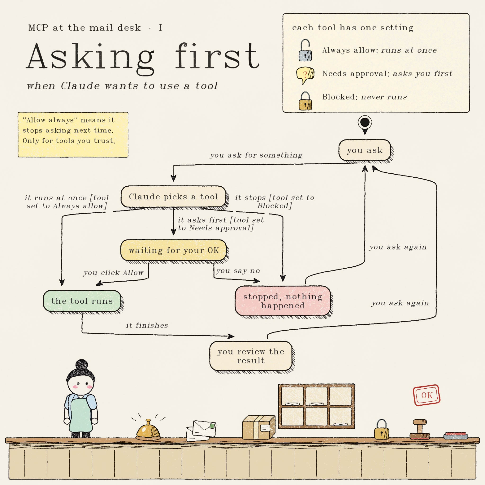

Plug your AI into your apps
MCP lets an AI assistant read and use Notion, Slack, Google Docs, Tableau and more, instead of you copying and pasting between them. This chapter: what it is, and what each assistant supports today.
Facts checked on 31 Oct 2026 against official pages where possible. Tags show how sure we are. This area changes fast.
The problem
The AI is smart, but it is locked in a box
By default a chat assistant only knows what you type or upload. It cannot open your Notion page, check your calendar or read yesterday's Slack thread. So you become the delivery person: open the app, copy, paste into the chat, copy the answer, paste it back.
"Here is the text of my project page [pasted]. Here are the notes from the meeting [pasted]. Now write the follow-up." Then you paste the result into an email by hand.
"Read my Notion page Q4 launch plan and today's calendar. Draft the follow-up email to the team." The AI fetches both itself and leaves a draft.
Illustrative example, not a real AI transcript.
The big idea
MCP is a USB-C port for AI
Before USB-C
Every gadget had its own cable. Phone, camera, laptop: a drawer full of chargers that did not fit each other.
Before MCP
Every AI tool needed its own custom link to every app. Ten apps and three assistants meant thirty separate connections to build.
modelcontextprotocol.io · official
Words to know · 1 of 3
Who is who: host, client, server
Think of a restaurant. You do not walk into the kitchen. You talk to a waiter, and the waiter talks to the kitchen.
The AI app you use
Claude, ChatGPT, Gemini, or a coding tool. This is where you type. (The restaurant.)
The messenger inside it
A small part of the app that holds one connection. The host creates one client for each server. You never see it. (The waiter.)
The thing you connect to
A program that offers the abilities of one app: your Notion, your Slack, your Tableau. (The kitchen.)
Heads up: "server" here does not mean a big computer in a data center. It just means "the side that offers things". Often the app's own company runs it for you.
Roles as described in the official MCP architecture overview · official
Words to know · 2 of 3
What a server can offer: tools, resources, prompts
Things it can do
Actions. "Search Slack." "Create a Notion page." "Send an email draft." Tools are the part that can change things, so they get the permission prompts.
Things it can show
Read-only material, like a file or a record. "The contents of this document."
Ready-made requests
Saved templates the server offers, like "summarize this week's tickets". Not every assistant shows these.
In everyday use you will mostly notice tools. When a chat says "Claude wants to use search from Slack", that is a tool.
Copilot Studio, for example, supports tools and resources but not prompts (Microsoft Learn).
Words to know · 3 of 3
Local server or remote server?
Lives on the internet
You paste a web address (URL) and sign in, like adding a social account. Nothing is installed. The company behind the app runs it. Notion, Slack and Tableau work this way.
Best for most people.
Runs on your own computer
A small program installed on your machine, started by the AI app. It can reach your files and anything on your computer. Setup is more technical.
Higher risk: it runs with your computer's permissions.
| Remote | Local | |
|---|---|---|
| How you add it | Paste a URL, sign in | Install an extension, or edit a settings file |
| Works in claude.ai on the web | Yes | No (Claude Help) |
| Main danger | What the app is allowed to do as you | Code running on your computer |
Transport names in the docs: remote = Streamable HTTP, local = stdio. Claude's local-vs-web difference: Claude Help, custom connectors · official
Why it matters
It is not one company's trick
- Open standard. Anthropic created MCP and in December 2025 donated it to the Agentic AI Foundation, part of the Linux Foundation.
- Rivals back it. The foundation was co-founded by Anthropic, Block and OpenAI, with support from Google, Microsoft and AWS.
- It is already in the tools you use. Claude, ChatGPT, Gemini and Microsoft Copilot Studio all have some form of MCP support, covered in the next pages.
What this means for you: a connection you set up once (say, Notion) can often be reused by different assistants. Learn the idea once and it carries over.
Anthropic: donating MCP · Linux Foundation press release · official
Section: each assistant
Who supports MCP, and how easy is it?
Every assistant uses its own words and has its own rules. Here is the short version. Details follow, one tool at a time.
| Assistant | What they call it | Easy for a non-technical person? |
|---|---|---|
| Claude | Connectors (custom connectors for your own MCP URL) | Yes Directory with one-click connectors; paid plans add a custom URL |
| ChatGPT | Apps / connectors; custom MCP through developer mode | Partly Custom MCP is a beta feature with plan and admin rules |
| Gemini | Connected Apps / custom apps (consumer); MCP servers (Gemini Enterprise, developer tools) | Limited Custom apps are US, personal-account, English only; Google's Workspace MCP servers are developer preview |
| Microsoft Copilot | MCP tools in Copilot Studio agents | Maker or IT task |
We go deepest on Claude because it is the clearest to use today and what this course demos.
Claude · 1 of 4
Claude: where to click and what it connects to
- Settings: Customize → Connectors (claude.ai and Claude Desktop).
- In any chat: the + button, then Connectors, to switch them on or off for that conversation.
- The same list appears on the mobile apps after you connect on web or Desktop.
- The Connectors Directory: ready-made connectors for popular apps (for example Gmail, Calendar, Drive, Docs, Sheets and Slides). Browse the list to see the rest.
- Custom connectors: any remote MCP server you have a URL for.
- Desktop extensions (local) on Claude Desktop.
- Custom connectors work on Free (one only), Pro, Max, Ultra, Team and Enterprise.
- Team: only Owners and Primary Owners can add. Enterprise: Owners and custom roles with "Manage access to Libraries".
- Then each person signs in themselves.
- Anthropic has not verified custom connectors.
- Connectors can read, create, change and delete data.
- Servers must be reachable from the public internet.
Claude Help: connectors · custom connectors · official
Claude · 2 of 4
Claude: add a custom connector, step by step
You need the server's web address (for example, the URL a company gives you for its MCP server).
On a Pro, Max or Free account (you are your own admin)
- Open Customize → Connectors.
- Click + Add, then Add custom connector.
- Type a name and paste the server URL. Continue.
- Click Connect and sign in to the app when its login page opens.
- Start a chat, click + → Connectors and make sure it is switched on.
On Team or Enterprise
An Owner goes to Organization settings → Connectors → Add → Custom → Web, enters the name and URL, picks how people sign in ("Sign in now", "Sign in when needed" or "No sign in") and clicks Add. Members then go to Customize → Connectors and click Connect.
To change a custom connector's details, Claude Help says you must remove it and add it again.
Claude Help: custom connectors · official · Pro/Max steps follow Claude Help's shorter description. Button labels can shift between releases, so follow what your screen shows.
Claude · 3 of 4
Claude: you stay in control
In a chat, open the Search and tools menu and switch off tools you do not need for this task. Fewer tools means fewer chances for a mistake.
Claude asks before using a tool. Read each one. Choose Allow always only for servers and tools you trust to run unsupervised.
Admins can set each tool category or tool to Always allow, Needs approval or Blocked. Users cannot override this.
Claude inherits what you can access in the app. It cannot see what you cannot. Its limits only ever narrow access.
Research mode runs tools automatically, with no approval. Claude Help says to switch off any tool that writes or changes data before you use it.
Claude Help: connectors · custom connectors · official
In pictures · I · asking first

How it was checked, and what it leaves out
How it was checked: we wrote the flow as a small model and a model checker (TLC) explored all 15 situations and 17 steps. Two rules held in every one: a Blocked tool never runs, and a tool never runs without your OK unless it is set to Always allow. This follows what Claude Help describes. It is not a test of Claude's own code. "Allow always" works like Allow, and the tool then stops asking.Settings and prompts from Claude Help: connectors · official · Picture made with the statechart-art skill (TLA+ model, TLC check, hand-drawn layout)
Claude · 4 of 4
Claude: remote, local, and Claude Code
| Route | What it is | Who it suits |
|---|---|---|
| Directory connector | One-click, remote, run by the app's company | Everyone. Start here. |
| Custom connector (remote URL) | You paste a URL. Claude reaches it from Anthropic's cloud, not from your computer, so it must be public on the internet | Anyone with a URL from a vendor or a no-code tool (Chapter 16) |
| Desktop extension | One-click local option inside Claude Desktop | People who need local files or apps |
claude_desktop_config.json | Hand-edited settings file for local servers. Not available in claude.ai or Cowork | Technical users |
| Claude Code | The coding tool. Command example: claude mcp add --transport http notion https://mcp.notion.com/mcp | Developers |
Connectors you add in claude.ai or Claude Desktop follow your account everywhere you sign in (web, desktop, mobile, and Claude Code). Things added from the Claude Code command line stay on that one machine.
A server behind a company VPN or firewall will not connect unless Anthropic's IP ranges are allowed. That is a job for your IT team.
Claude docs: connectors, skills, plugins · Claude Code: MCP · official
ChatGPT · 1 of 2
ChatGPT: where to click and what to expect
Custom MCP is added through developer mode. OpenAI's developer docs say to open the plugins page (chatgpt.com/plugins), click +, choose Add custom MCP server, then paste a URL ending in /mcp.
Names are shifting: OpenAI's help center says "apps", its developer page says "plugins". Expect the labels to differ.
Ready-made apps in ChatGPT, plus custom MCP servers over a public HTTPS address (Streamable HTTP). Beta "full MCP" support includes write actions, not just reading.
- OpenAI's help page: full MCP and developer mode are in beta for Business, Enterprise and Edu, on web.
- Admins switch it on first (workspace settings → permissions). On Business, only admins can use it. On Enterprise/Edu, admins can give it to chosen people.
- Third-party guides say Plus and Pro can use it too. conflict: check your plan
- The Free plan: not available.
- ChatGPT shows a risk warning you must accept.
- Write actions can change real data.
- Workspace policy can block it.
OpenAI developers: connect ChatGPT · official · OpenAI Help: developer mode page blocked for us; plan details read from a search summary
ChatGPT · 2 of 2
ChatGPT: add a custom MCP server
- Admin first (Business/Enterprise/Edu): turn on developer mode in workspace settings under Permissions & Roles. Each admin enables it for themselves.
- Open chatgpt.com/plugins (the label may read "Apps" or "Connectors" in your version) and click +.
- Choose Add custom MCP server. Type a name and a short description.
- Paste the server's public URL. It must end in
/mcp. - Set up sign-in, read the risk warning and click I understand and want to continue.
- Click Create, then review the list of tools ChatGPT discovered.
If it will not connect: OpenAI's own tip is to test the address with the MCP Inspector tool first (Chapter 16). Another cause: the URL is missing /mcp.
Plain truth: this is a beta, admin-gated route. For learners with a personal ChatGPT account, check first whether the option even appears for you.
OpenAI developers: connect ChatGPT · official steps · the admin step comes from OpenAI Help via a search summary re-check live
Gemini · 1 of 3
Gemini: four different things share one name
"Does Gemini support MCP?" has four answers, depending on which Gemini you mean.
| Which Gemini | MCP today | Who it is for |
|---|---|---|
| Gemini app (consumer) | Custom apps: paste an MCP server URL | Everyone who meets Google's conditions (next page) |
| Gemini Enterprise, Business edition | Admin adds a custom MCP server (pre-GA) | Team admins |
| Google Workspace MCP servers (Gmail, Drive, Docs, Sheets, Slides, Calendar, Chat) | Official servers, Developer Preview | Developers with a Google Cloud project |
| Gemini CLI / Gemini API | Supported | Developers only |
Say it plainly: in the ordinary Gemini app there is no one-click Workspace MCP. Google's Docs/Slides/Drive MCP servers are a developer preview that needs a Cloud project and an OAuth client.
Gemini also reads your Gmail, Drive and Calendar through its own built-in apps. That is separate from MCP.
Google: Workspace MCP servers · Gemini Enterprise: custom MCP · official · Gemini API: third-party only
Gemini · 2 of 3
Gemini app: add a custom app
Google's help page for custom apps lists the conditions up front:
- be 18 or older, in the US
- use a personal Google Account (not work or school)
- have Keep Activity turned on
- use English
- add the app on the web (gemini.google.com); it then also works on mobile
- Go to gemini.google.com. Settings → Connected Apps. (If you do not see it, click Personal Intelligence first.)
- Under Custom apps, click Add a custom app.
- Paste the MCP server URL. Click Next and follow the prompts.
- In a chat, type @ and pick the app.
Gemini requires manual confirmation for any write action. Removing an app (not just turning it off) also unlinks the server from your Google Account.
Google says it "does not control, monitor, or secure third-party MCP servers" and that custom apps may ask for more data than needed.
Gemini Apps Help: custom apps · official · The page does not name plans. Third-party pages tie it to a paid "Spark" beta unverified.
Gemini · 3 of 3
Gemini at work: Enterprise and developer routes
- A team admin opens Settings & help → team → Manage team → Connected apps.
- Click Add MCP Server, enter URL and name.
- Choose sign-in: none, or OAuth 2.0 (client ID, secret, URLs).
- Add it. It is off by default, so switch it on for the team.
Needs a public HTTPS server and Streamable HTTP (the older SSE is not supported). Pre-GA: "as is, limited support".
Endpoints such as drivemcp.googleapis.com and slidesmcp.googleapis.com. Needs: Developer Preview Program membership, a Google Cloud project, the gcloud tool, and an OAuth client marked "for an AI-powered agent".
Google's page lists Claude (Pro, Max, Team, Enterprise) and Google Antigravity as supported clients.
For a non-technical Claude user: skip this. Use Claude's built-in Google connectors (Chapter 15).
Naming note: Google's docs say Gemini CLI was replaced by Antigravity CLI on 18 June 2026 for unpaid-tier and Google One users. Check which one you have.
Gemini Enterprise: custom MCP server · Drive MCP · Slides MCP · Gemini CLI · official
Microsoft
Microsoft Copilot: a job for makers and IT
In Copilot Studio (where people build custom agents), a wizard connects an agent to an existing MCP server. You must turn on generative orchestration first.
Any MCP server. Copilot Studio supports MCP tools and resources, and updates when the server's tools change.
Studio is a builder tool, not a switch for an ordinary chat user. Admin controls apply. Microsoft 365 Copilot's own MCP-based agents are managed in the admin center, but we only found secondary sources dated 2025. unverified for 2026
Microsoft states that for non-Microsoft MCP servers, you are responsible for the tools and resources you use.
Microsoft Learn: MCP in Copilot Studio · official
Side by side
Comparison: MCP in each assistant
| Claude | ChatGPT | Gemini | Microsoft Copilot | |
|---|---|---|---|---|
| Name | Connectors, custom connectors | Apps / connectors, developer mode | Connected Apps (custom apps); MCP servers | MCP tools in Copilot Studio |
| Where to click | Customize → Connectors; chat + menu | Plugins / apps page, developer mode | Settings → Connected Apps (web) | Copilot Studio wizard |
| Add your own URL | Yes: Free (1), Pro, Max, Ultra, Team, Enterprise | Beta: Business, Enterprise, Edu; Plus/Pro per 3rd-party check | US, 18+, personal account, English. Enterprise: admin | Yes, in Studio |
| Who can add | You (Team: Owners only) | Admin-gated on workspaces | You (consumer); admin (Enterprise) | Makers building agents; admins manage |
| Write actions | Yes, with approval prompts | Yes (beta) | Yes, manual confirmation | Depends on the tools the server offers |
| Biggest limit | Server must be public on the internet | Beta, plan rules unclear | Narrow conditions; Workspace MCP is developer preview | Builder tool, not end-user chat |
All of this is as of 31 Oct 2026. Plans and labels change often. See the next slide for what to re-check before teaching.
Honest limits
What we could not fully confirm
- ChatGPT plans: OpenAI's help page was blocked for us. It lists Business, Enterprise and Edu; third-party guides add Plus and Pro. Look in your own account.
- Gemini consumer plan tier: Google's page lists conditions (US, 18+, personal account, English) but no plan. Check Connected Apps in your account.
- Google Docs/Slides MCP: still Developer Preview. Not a click-through yet.
- Microsoft 365 Copilot: current non-Studio MCP details only from secondary sources.
- Gemini API MCP support: third-party source only.
A good habit for any fast-moving tool: before you teach or rely on a feature, open the official page and your own settings once.
Recap
Remember these five lines
Claude is the smoothest route today. ChatGPT and Gemini work but with plan and region conditions. Microsoft's is for builders.
Next: Chapter 15, connect a real app and use it day to day. Go to Chapter 15 →